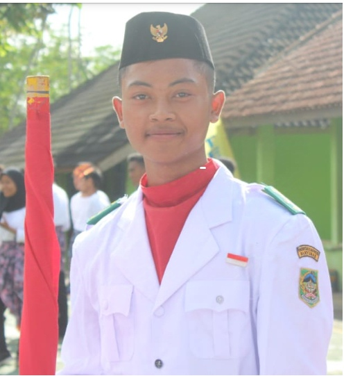

Rhenando Wahyu Regi Ardana
Profil
Saya adalah seorang mahasiswa di STMIK WIDYA UTAMA.
Informasi Pribadi
- Alamat: Kotayasa rt 05/02, Kec. Sumbang, Kab. Banyumas
- Telepon: 083128886810
- Email: rhenandonando@gmail.com
- Tanggal Lahir: 13 Oktober 2003
Pendidikan
- SD N 1 SUMBANG - (2010 - 2016)
- SMP N 2 BATURRADEN - (2016 - 2019)
- SMK S BINA TEKNOLOGI PURWOKERTO - Teknik Permesinan (2019 - 2022)
Pengalaman Kerja
- PT CGS INDONESIA - (2021)
Keahlian
- Mengoprasikan Mesin Industri
- Menggunakan Alat Las
- Memperbaiki Sepeda Motor dan Mobil
- Mengoprasikan Komputer